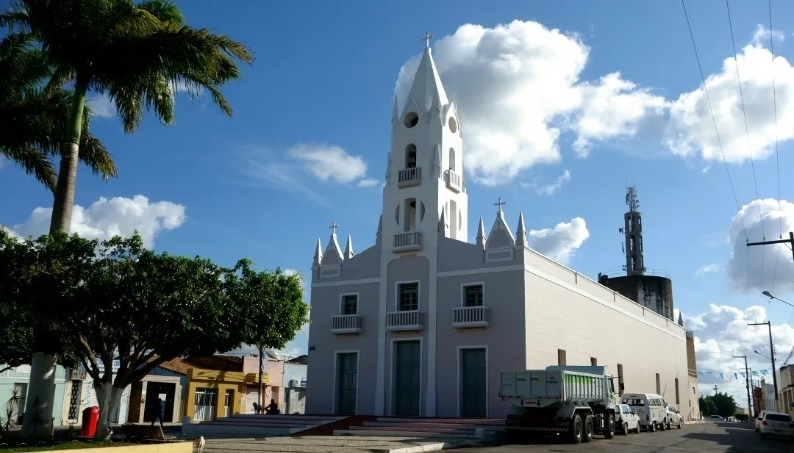

Japoatã
História
No início denominava-se Jaboatã, nome cuja origem está dividida em duas correntes de opinião. Uma corrente afirma que Japoatã advem de Frei Jaboatão que dirigindo um grupo de franciscanos fundou um convento e uma igreja no lugar Riacho do Meio com a finalidade de catequizar o cacique Pacatuba e sua tribo. Outra corrente apresenta uma versão que tem como ponto comum a catequese dos silvícolas, porém, afirmando que foram os jesuítas e não os franciscanos que fundaram a Missão Riacho do Meio, onde fundaram um convento no morro Jaboatão e perto do Monte Cruzeiro de Pedra uma igreja sob o orago de Nossa Senhora das Agonias, sendo os mesmos substituídos pelos franciscanos após a explusão daqueles pelo Marquês de Pombal
Em 1630 a imagem de Nossa Senhora das Agonias, por ordem do Vaticano seguiu para Roma, ficando a povoação consagrada a Nossa Senhora do Desterro. Corre pela região a crença na existência do fabuloso tesouro de Jaboatão deixado enterrado pelos religiosos quando abandonaram a área durante a invasão holandesa ou quando da expulsão dos jesuítas. De concreto existe a Lei nº 583 de 23 de novembro de 1910 que promove Jaboatão à categoria de município, lei que caducou devido a não instalação do mesmo. Em 20 de outubro de 1926 a Lei 960 guinda Jaboatão à sede municipal e rebaixa Pacatuba à categoria de povoado e distrito único.
O Decreto-Lei Estadual nº 69 cria o Distrito de Paz de Pacatuba pertencente a Japoatão. Atendendo a legislação federal relativa a multiplicidade de topônimo, o município passou a denominar-se Japoatã, nome que foi confirmado pela Lei Estadual nº 525-A de 25 de novembro de 1953.
fonte: https://www.japoata.se.gov.br/Dados Gerais de acordo com o IBGE
| Prefeito (a) | Claudio Dinisio Nascimento |
| Vice-Prefeito (a) | Eugenice Guimaraes Carvalho |
| Site do município | https://www.japoata.se.gov.br/ |
| Área territorial | 402.353 km² |
| População estimada | 13.422 pessoas |
| Densidade demográfica | 31,76 hab/km² |
| IDHM | 0,560 |
| PIB per capita | R$ 13.228,75 |